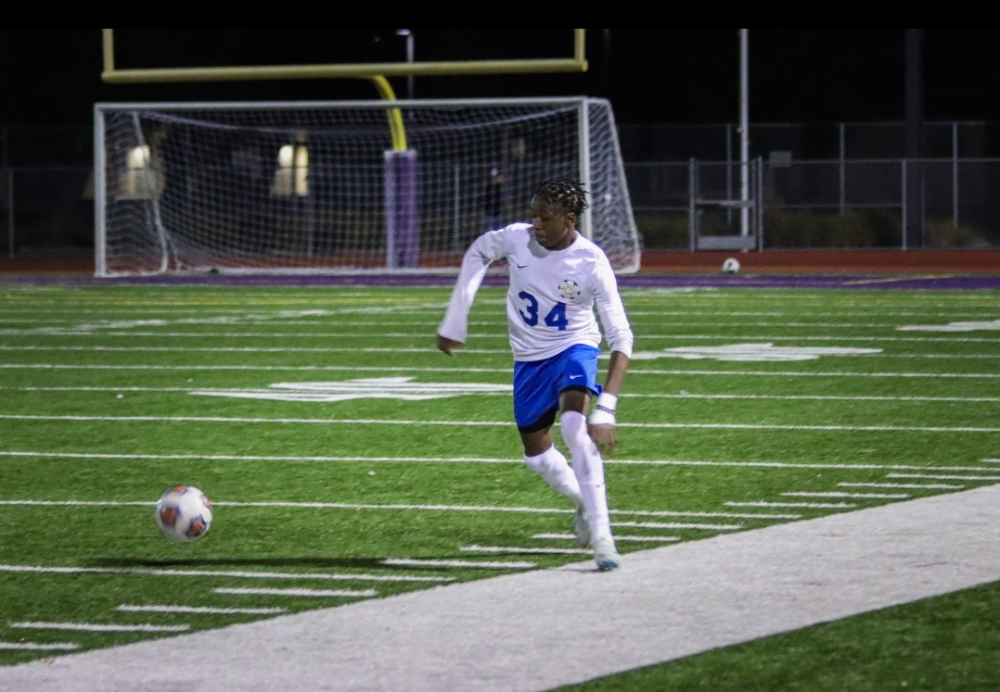
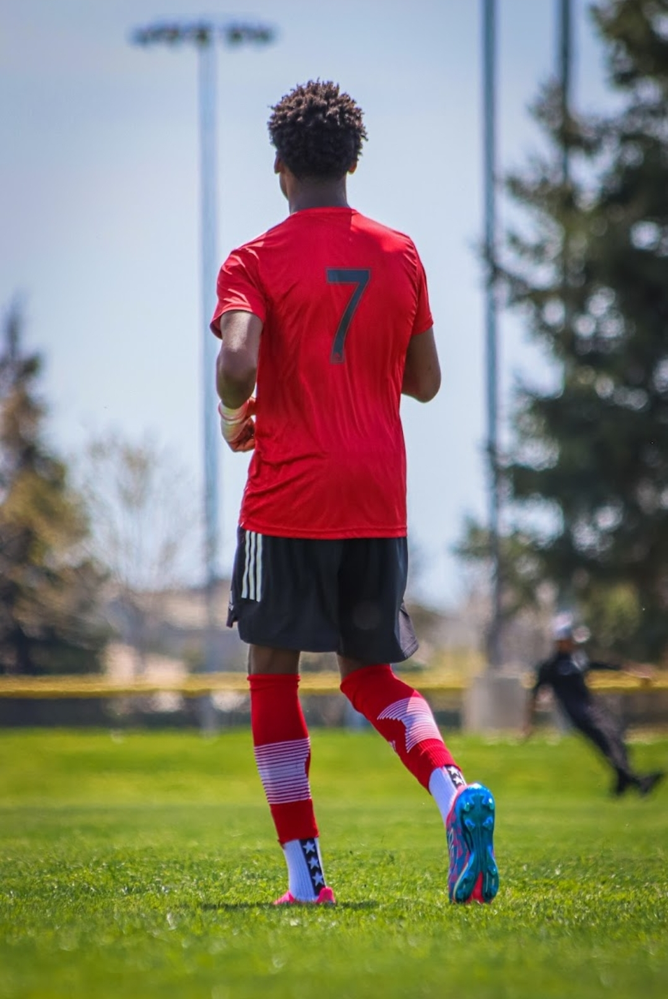
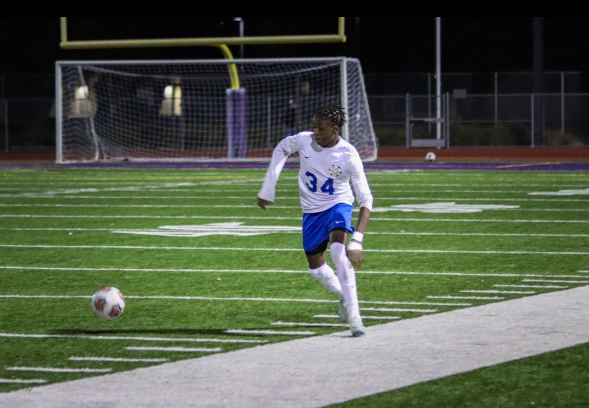
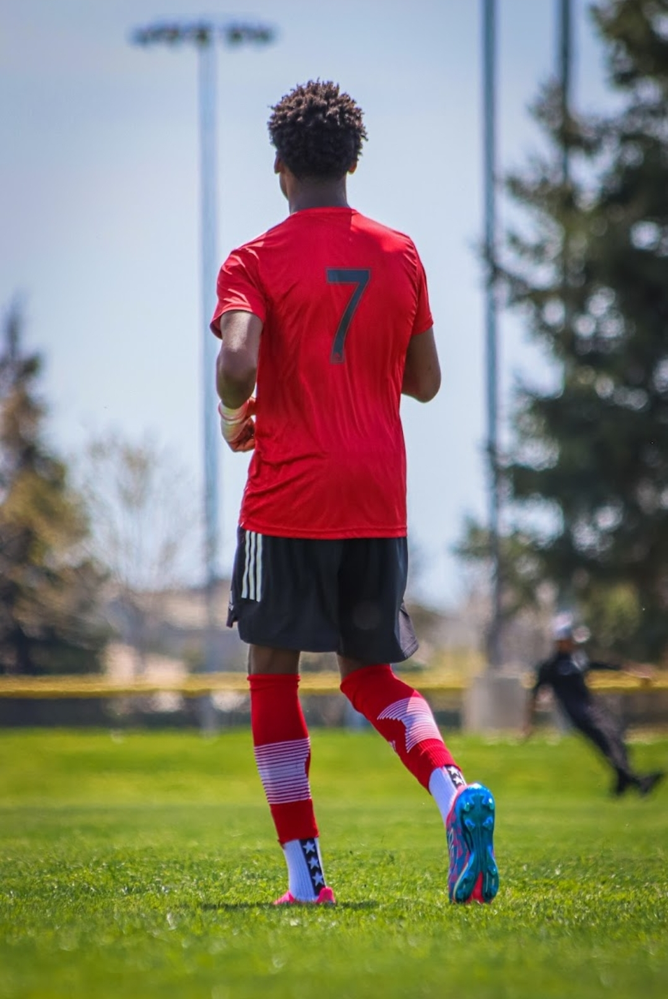

Salute Monde!
Voici Mes Joueres Prefere Du Monde
Apuyez ici pour voir plus.
Hello, im Beri, only a few ppl here know, but my favorite hobby is soccer. i started playing soccer in
my country when i was about 3 years old. Soccer for me is a very peacefull game and fun depending on the
atmosphere. soccer also gets violent when it gets competetive, but it still depends on the atmosphere
C'est la Vie.